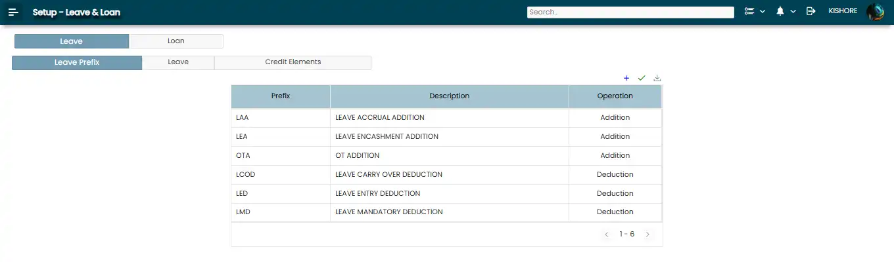
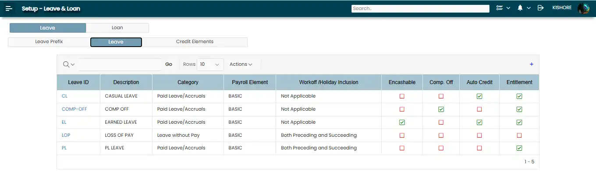
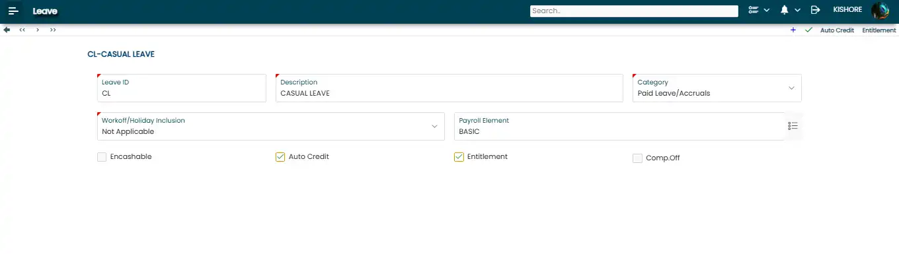
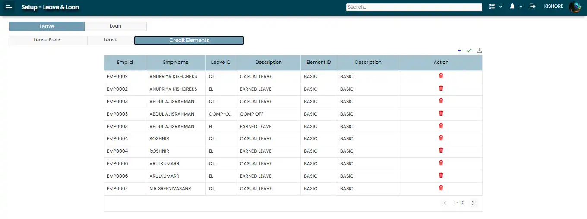
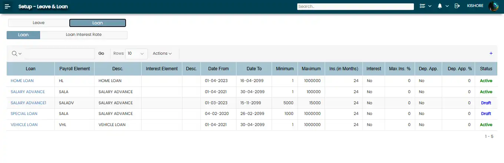
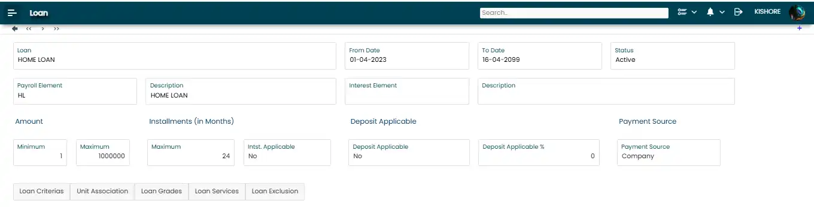

<div data-category="Payroll" data-title="Setup-Leave & Loan" data-updated="December 01, 2025" data-contributors="RoadmapIT" data-breadcrumb="Home,Payroll,Setup-Leave & Loan">
  <div class="page-content">
    <p>User can use this screen to define the leave types and loan types.</p>
    <h5>Navigation path:</h5>
    <p class="fs-6">Payroll \ Setup \ Setup-Leave & Loan</p>
    <!-- Leave -->
    <h2>Leave prefix</h2>
    
    <h2>Leave:</h2>
    <p>Leave details can be defined in this screen.</p>
    
    <ul style="list-style-type: none">
      <li class="mouse-icon">
        Click
        <i class="bi bi-plus fs-4 mx-2 text-primary"></i>
        to Create.
      </li>
      
      <li class="mouse-icon">Enter the Leave ID.</li>
      <li class="mouse-icon">Enter the Description.</li>
      <li class="mouse-icon">Select the category.</li>
      <li class="mouse-icon">Select week-off / holiday inclusion.</li>
      <li class="mouse-icon">Select payroll elements.</li>
      <li class="mouse-icon">Based on policy, enable the appropriate checkbox.</li>
      <li class="mouse-icon">
        Click
        <i class="bi bi-check-lg fs-4 mx-1 text-success"></i>
        to save.
      </li>
    </ul>
    <h2>Credit Element</h2>
    <p>Employees who all are eligible for the leaves can be viewed in this screen.</p>
    
    <!-- Loan -->
    <h2>Loan:</h2>
    
    <ul style="list-style-type: none">
      <li class="mouse-icon">
        Click
        <i class="bi bi-plus fs-4 mx-2 text-primary"></i>
        to Create.
      </li>
      
      <li class="mouse-icon">Enter loan name.</li>
      <li class="mouse-icon">Select From and To dates.</li>
      <li class="mouse-icon">Select payroll element.</li>
      <li class="mouse-icon">Enter minimum and maximum amount.</li>
      <li class="mouse-icon">Enter installment period(in months).</li>
      <li class="mouse-icon">
        Click
        <i class="bi bi-check-lg fs-4 mx-1 text-success"></i>
        to save.
      </li>
    </ul>
  </div>
</div>
